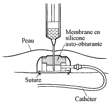

La chambre a catheter implantable
DefinitionLa chambre implantable ou chambre a catheter implantable (CCI) est un reservoir d’acces vasculaire central, implante sous la peau, pour l'injection de medicaments.
Cadre legislatif
- Prelevements sanguins relevant du rele sur prescription medicale : art. R.4311-7 decret 2004-802 du 29/07/2004.
- Injections relevant du rele sur prescription medicale : art. R.4311-7 decret 2004-802 du 29/07/2004.
- Surveillance relevant du rele propre infirmier : art. R. 4311-5 decret 2004-802 du 29/07/2004.
Objectifs
- Acces repete au systeme vasculaire.
- Realisation de traitement ambulatoire.
- Augmenter le confort du patient.
- Reduire le risque infectieux.
Indications
- Preserver le capital veineux.
- Injections et perfusions medicamenteuses en continues.
- Chimiotherapie anti-cancereuse.
- Alimentation parenterale.
- Faire des prelevements sanguins.
Contre-indications
- Allergie au silicone.
- Trouble de la coagulation.
- Compression vasculaire.
- Hemophilie.
Descriptif de la chambre implantable
La chambre implantable est constituee de 3 parties :
- La chambre ou reservoir compose du septum en silicone : partie superieur oe sont faites les injections, constituee d'une membrane en silicone auto-obstructive.
- Le catheter : en silicone ou en polyurethane radio-opaque qui relie la chambre au reseau veineux, il est fixe a la chambre par un systeme de verrouillage en acier.
- Le systeme de verrouillage.

Les lieux d'implantation- Thoracique : veine sous-claviere ou veine jugulaire.
- Iliaque : veine iliaque, veine cave inferieur.
- Intra arteriel : in situ a un organe.
- Intra peritoneal : dans le peritoine.
- Intra rachidien : pour un traitement antalgique, canal arachnoedien.
Risques et Complications
- Infection :
- Asepsie rigoureuse, environnement propre, materiel sterile a usage unique.
- Desinfection de la peau.
- Mettre un masque au patient et lui faire tourner la tete.
- Risque de retournement de la chambre implantable :
- Avant de la manipuler, reperer obligatoirement la chambre entre 2 doigts.
- Pour piquer, ne jamais lecher la chambre et toujours la maintenir.
- Pour depiquer, ne jamais lecher la chambre et toujours la maintenir.
- Thrombose veineuse ou obstruction du catheter :
- Avant d’injecter, s’assurer de la permeabilite du catheter, verifier le reflux a chaque manipulation, apres le reflux, faire un rineage abondant.
- Remplir une seringue de serum physiologique et pousser : si resistance, il y a obstruction, ne plus pousser.
- Toujours rincer les chambres abondamment au moment du debranchement, du branchement et entre chaque traitement.
- Risque d’extravasation : epanchement de produit injecte en dehors de la chambre avec diffusion dans les tissus peri-vasculaires.
- Risque de desunion du catheter et de la chambre.
- Risque d’embolie gazeuse :
- Toujours travailler avec du materiel purge.
- Toujours manipuler en systeme clos.
- Prendre systematiquement des seringues e pas de vis.
Realisation du soin : les regles de manipulation d'une chambre implantable
-
Toujours utiliser une aiguille a pointe de Huber : biseau tangentiel afin d'eviter d'enlever une carotte du septum de la chambre implantable.
-
Utiliser une seringue a verrou : evite les problemes d'etancheite.
-
Utiliser une seringue superieur ou egale a 10 ml : pour ne pas exercer une pression trop forte qui pourrait entraener une rupture du catheter.
-
Maintenir le systeme ferme et en pression continue : pour eviter une embolie gazeuse et le reflux sanguin dans le catheter (risque de coagulation).
-
Maintenir fermement la chambre entre deux doigts lors des manipulations : permet d'avoir un geste precis et efficace. Evite le retournement du boetier et des douleurs.
-
Piquer perpendiculairement : pour eviter de leser la membrane et la rendre permeable.
-
Piquer jusqu'e la butee de l'aiguille : pour etre certain d'injecter dans la chambre.
-
Injecter du serum physiologique avant toute injection medicamenteuse : diminue les risques lies a l'extravasation et les obstructions.
-
Injecter sans exercer de pression trop forte : pour ne pas depasser un eventuel thrombus ou de creer une rupture du catheter.
-
Verifier l'etat cutane avant tout soin : diminue le risque infectieux.
-
Rincer la chambre apres chaque manipulation : evite l'apparition d'un thrombus qui nuirait a la permeabilite du catheter.
-
Alcoolisation apres passage de nutrition parenterale : evite l'obstruction du catheter.
-
Tout retrait d'aiguille de Huber ou gripper se fait en pression positive.
- Arreter la perfusion mais ne pas depiquer.
- Prevenir le medecin.
- Delimiter les contours du territoire extravase par un crayon dermographique indelebile.
- Conserver le dispositif d'injection en place.
- Aspirer 3 a 5 ml de sang pour retirer le maximum de produit anticancereux.
- Injecter 5 a 10 ml de serum physiologique afin de diluer le medicament.
- Puis aspirer a l'aiguille courte le maximum de produit infiltre.
- Retirer le dispositif d'injection.
Realisation du soin : le prelevement sanguin sur une chambre implantable du soin Materiel
- Compresses steriles.
- Produits pour l’antisepsie :
- Respecter les memes gammes de produit : polyvidone iodee ou chlorexidine.
- Savon antiseptique.
- Serum physiologique ou eau sterile.
- Antiseptique dermique.
- Champ sterile fenestre.
- Pansement sterile.
- Aiguille de Huber.
- 3 seringues steriles : 5 mL, 20 mL, 20 mL.
- 3 aiguilles pompeuses (rose : 18 Gauge).
- Un prolongateur muni d'un robinet a 3 voies.
- Serum physiologique isotonique : 50 mL
- Utiliser de preference une poche pour perfusion puisque celle-ci est sterile dans son emballage.
- Ou des ampoules de serum physiologique isotonique.
- 1 ampoule d'heparine de rineage sur prescription medicale ou protocole.
- Systeme de prelevement :
- Corps de pompe a usage unique (vacutainer).
- Adaptateur sterile a usage unique pour corps de pompe.
- Ou seringue sterile.
- Tube(s) de prelevement sous vide pour analyses (prevoir 2 tubes secs supplementaire pour purger la ligne).
- Etiquettes laboratoire d'identification patient.
- Bons d'analyses laboratoire, avec pochette de transport.
- 2 bavettes.
- Gants steriles.
- Sac a elimination des dechets.
- Conteneur a dechets contamines piquants et tranchants.
- Desinfectant de surface et chiffonnette.
- Necessaire a l'hygiene des mains.
Realisation du soin
La manipulation de la ligne de perfusion, du robinet ou d'une rampe de perfusion se fait toujours avec des compresses steriles imbibees d’antiseptique puisque les antiseptiques diminuent la colonisation des embases du catheter : une dessous pour tenir le dispositif, une autre pour tourner le robinet et manipuler les bouchons.1
1Recommandations pour la pratique clinique “Prevention des infections liees aux catheters veineux peripheriques”, SFHH – HAS, novembre 2005. (R 36)
La manipulation de la ligne de perfusion, du robinet ou d'une rampe de perfusion se fait toujours apres un lavage antiseptique des mains.2
2(article 86, 100 recommandations pour la surveillance et la prevention des infections nosocomiales, Ministere de l'Emploi et de la Solidarite. Secretariat d'Etat a la Sante et a l'action sociale Comite Technique des Infections Nosocomiales - 2eme edition, 1999)
- Verifier la prescription medicale.
- Prevenir le patient.
- Mettre une bavette. Mettre la deuxieme bavette au patient.
- Installer le patient torse nu, lui mettre une bavette, lui demander de tourner la tete du cote oppose a la chambre implantable.
- Effectuer un lavage simple des mains ou effectuer un traitement hygienique des mains par frictions avec une solution hydro-alcoolique : hygiene des mains.
- Installer le materiel apres verification des dates de peremptions et de l'integrite des emballages.
- Installation sur une surface propre et desinfectee au prealable.
- Installer les poubelles de tri des dechets au pied du lit du patient.
- Respecter le triangle d'hygiene, de securite et d'ergonomie : Propre (materiel) – Patient – Sale (poubelles).
- Ouvrir le champ des gants steriles et y deposer aseptiquement le materiel : aiguille de Huber, prolongateur, seringues, aiguilles pompeuses, poche pour perfusion de serum physiologique, champ sterile fenestre.
- Ouvrir aseptiquement les paquets de
compresses et les imbiber avec le savon antiseptique (mettre un peu de
serum ou eau sur le savon antiseptique afin de le diluer), le serum
physiologique, l’antiseptique dermique, laisser un paquet de compresses
seches.
- Effectuer un lavage antiseptique des mains ou effectuer un traitement hygienique des mains par frictions avec une solution hydro-alcoolique : hygiene des mains.
- Mettre les gants steriles.
- Preparer le materiel :
- Remplir la seringue de 5 mL avec l'heparine de rineage en manipulant l'ampoule avec une compresse sterile pour ne pas se desterilise.
- Remplir les seringues de 20 mL de serum physiologique isotonique (si utilisation d'ampoules, les manipuler avec une compresse sterile pour ne pas se desterilise).
- Adapter l'aiguille de Huber au prolongateur.
- Adapter une seringue de 20 mL a l'un des robinets du prolongateur.
- Purger le dispositif avec le serum physiologique, ne pas utiliser les 20 mL. Fermer le robinet mais laisser la seringue sur celui-ci.
- Pratiquer une premiere desinfection large autour de la chambre implantable en 2 temps :
- Aller de l'exterieur vers l'interieur = faire un cete, l'autre cete et terminer par le milieu (site de ponction).
- Ne jamais repasser a un meme endroit.
- Utiliser une compresse par passage puis la jeter dans le sac a dechets contamines.
- Respecter le temps de contact de l'antiseptique : risque de faux resultat par injection dans le circuit de prelevement.
- Nettoyer avec le savon antiseptique.
- Rincer avec le serum physiologique ou l'eau sterile.
- Secher avec des compresses steriles seches.
- Installer le champ sterile fenestre sur le thorax du patient.
- Effectuer une seconde antisepsie de la chambre :
- Aller de l'exterieur vers l'interieur = faire un cete, l'autre cete et terminer par le milieu (site de ponction).
- Ne jamais repasser a un meme endroit.
- Utiliser une compresse par passage puis la jeter dans le sac a dechets contamines.
- Respecter le temps de contact de l'antiseptique : risque de faux resultat par injection dans le circuit de prelevement.
- Antiseptique dermique.
- Maintenir la chambre entre le pouce et l'index, piquer perpendiculairement dans le septum de la chambre avec l'aiguille de Huber, jusqu'e la butee de l'aiguille.
- Ouvrir le robinet et verifier le reflux : aspirer du sang dans le prolongateur et rincer la ligne.
- Fermer la voie, retirer et jeter la seringue dans le container a dechets contamines.
- Adapter le corps de pompe au robinet, ouvrir la voie et purger la ligne avec les tubes de purges, les jeter.
- Prelever les tubes d'analyses et refermer la voie :
- Introduire les tubes de prelevements selon un ordre precis (critere de bon prelevement) : voir la fiche Ordre de prelevement des tubes d'analyses biologiques.
- Selon la prescription ou le protocole, injecter 5 mL d'heparine de rineage.
- Adapter la seconde seringue de 20 mL, injecter 10 mL de serum physiologique pour rincer la voie.
- Puis depiquer tout en exereant une pression positive : c'est a dire, depiquer en injectant les 10 mL restant.
- Jeter immediatement l'aiguille dans le container a dechets contamines piquants.
- Realiser une troisieme antisepsie de la peau avec l'antiseptique dermique.
- Mettre un pansement.
- Reinstaller le patient.
- Eliminer les dechets contamines et desinfecter le materiel utilise ainsi que le plan de travail.
- Effectuer un lavage simple des mains ou effectuer un traitement hygienique des mains par frictions avec une solution hydro-alcoolique : hygiene des mains.
- Verifier la concordance des etiquettes et de l'identite du patient puis etiqueter les tubes d'analyses, remplir les bons d'analyse et acheminer les tubes au laboratoire d'analyse.
Realisation du soin : l'injection ou perfusion sur une chambre implantable du soin
Materiel
- Compresses steriles.
- Produits pour l’antisepsie :
- Respecter les memes gammes de produit : polyvidone iodee ou chlorexidine.
- Savon antiseptique.
- Serum physiologique ou eau sterile.
- Antiseptique dermique.
- Champ sterile fenestre.
- Pansement occlusif sterile transparent (Opsitee, Tegaderme).
- Aiguille de Huber.
- 3 seringues steriles : 5 mL, 20 mL, 20 mL.
- 3 aiguilles pompeuses (rose : 18 Gauge).
- Un prolongateur muni d'un robinet a 3 voies.
- Produit a injecter.
- Presentation du produit :
- Seringue sterile de 1 mL a 20 mL en fonction de la quantite du produit a injecter.
- Poche pour perfusion avec tubulure.
- Serum physiologique isotonique : 50 mL
- Utiliser de preference une poche pour perfusion puisque celle-ci est sterile dans son emballage.
- Ou des ampoules de serum physiologique isotonique.
- 1 ampoule d'heparine de rineage sur prescription medicale ou protocole.
- 2 bavettes.
- Gants steriles
- Sac a elimination des dechets.
- Conteneur a dechets contamines piquants et tranchants.
- Desinfectant de surface et chiffonnette.
- Necessaire a l'hygiene des mains.
La manipulation de la ligne de perfusion, du robinet ou d'une rampe de perfusion se fait toujours avec des compresses steriles imbibees d’antiseptique puisque les antiseptiques diminuent la colonisation des embases du catheter : une dessous pour tenir le dispositif, une autre pour tourner le robinet et manipuler les bouchons.1
1Recommandations pour la pratique clinique “Prevention des infections liees aux catheters veineux peripheriques”, SFHH – HAS, novembre 2005. (R 36)
La manipulation de la ligne de perfusion, du robinet ou d'une rampe de perfusion se fait toujours apres un lavage antiseptique des mains.2
2(article 86, 100 recommandations pour la surveillance et la prevention des infections nosocomiales, Ministere de l'Emploi et de la Solidarite. Secretariat d'Etat a la Sante et a l'action sociale Comite Technique des Infections Nosocomiales - 2eme edition, 1999)
- Verifier la prescription medicale.
- Prevenir le patient.
- Mettre une bavette. Mettre la deuxieme bavette au patient.
- Installer le patient torse nu, lui mettre une bavette, lui demander de tourner la tete du cote oppose a la chambre implantable.
- Effectuer un lavage simple des mains ou effectuer un traitement hygienique des mains par frictions avec une solution hydro-alcoolique : hygiene des mains.
- Installer le materiel apres verification des dates de peremptions et de l'integrite des emballages.
- Installation sur une surface propre et desinfectee au prealable.
- Installer les poubelles de tri des dechets au pied du lit du patient.
- Respecter le triangle d'hygiene, de securite et d'ergonomie : Propre (materiel) – Patient – Sale (poubelles).
- Ouvrir le champ des gants steriles et y deposer aseptiquement le materiel : aiguille de Huber, prolongateur, seringues, aiguilles pompeuses, poche pour perfusion de serum physiologique, champ sterile fenestre.
- Ouvrir
aseptiquement les paquets de compresses et les imbiber avec le savon
antiseptique (mettre un peu de serum ou eau sur le savon antiseptique
afin de le diluer), le serum physiologique, l’antiseptique dermique,
laisser un paquet de compresses seches.
- Effectuer un lavage antiseptique des mains ou effectuer un traitement hygienique des mains par frictions avec une solution hydro-alcoolique : hygiene des mains.
- Mettre les gants steriles.
- Preparer le materiel :
- Remplir la seringue de 5 mL avec l'heparine de rineage en manipulant l'ampoule avec une compresse sterile pour ne pas se desterilise.
- Remplir les seringues de 20 mL de serum physiologique isotonique (si utilisation d'ampoules, les manipuler avec une compresse sterile pour ne pas se desterilise).
- Adapter l'aiguille de Huber au prolongateur.
- Adapter une seringue de 20 mL a l'un des robinets du prolongateur.
- Purger le dispositif avec le serum physiologique, ne pas utiliser les 20 mL. Fermer le robinet mais laisser la seringue sur celui-ci.
- Pratiquer une premiere desinfection large autour de la chambre implantable en 2 temps :
- Aller de l'exterieur vers l'interieur = faire un cete, l'autre cete et terminer par le milieu (site de ponction).
- Ne jamais repasser a un meme endroit.
- Utiliser une compresse par passage puis la jeter dans le sac a dechets contamines.
- Respecter le temps de contact de l'antiseptique : risque de faux resultat par injection dans le circuit de prelevement.
- Nettoyer avec le savon antiseptique.
- Rincer avec le serum physiologique ou l'eau sterile.
- Secher avec des compresses steriles seches.
- Installer le champ sterile fenestre sur le thorax du patient.
- Effectuer une seconde antisepsie de la chambre :
- Aller de l'exterieur vers l'interieur = faire un cete, l'autre cete et terminer par le milieu (site de ponction).
- Ne jamais repasser a un meme endroit.
- Utiliser une compresse par passage puis la jeter dans le sac a dechets contamines.
- Respecter le temps de contact de l'antiseptique : risque de faux resultat par injection dans le circuit de prelevement.
- Antiseptique dermique.
- Maintenir la chambre entre le pouce et l'index, piquer perpendiculairement dans le septum de la chambre avec l'aiguille de Huber, jusqu'e la butee de l'aiguille.
- Ouvrir le robinet et verifier le reflux : aspirer du sang dans le prolongateur et rincer la ligne.
- Fermer la voie, retirer et jeter la seringue dans le container a dechets contamines.
- Adapter la seringue du produit medicamenteux prescrit et injecter la solution ou brancher la ligne de perfusion.
- A la fin de l'administration du produit :
- Selon la prescription ou le protocole, injecter 5 mL d'heparine de rineage.
- Adapter la seconde seringue de 20 mL, injecter 10 mL de serum physiologique pour rincer la voie.
- Puis depiquer tout en exereant une pression positive : c'est a dire, depiquer en injectant les 10 mL restant.
- Jeter immediatement l'aiguille dans le container a dechets contamines piquants.
- Realiser une troisieme antisepsie de la peau avec l'antiseptique dermique.
- Mettre un pansement.
- Reinstaller le patient.
- Eliminer les dechets contamines et desinfecter le materiel utilise ainsi que le plan de travail.
- Effectuer un lavage simple des mains ou effectuer un traitement hygienique des mains par frictions avec une solution hydro-alcoolique : hygiene des mains.
- Verifier la concordance des etiquettes et de l'identite du patient puis etiqueter les tubes d'analyses, remplir les bons d'analyse et acheminer les tubes au laboratoire d'analyse.